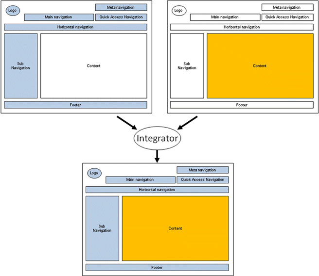

wcm.io
wcm.ioIntegrator Template Mode
Introduction
The “Integrator template” is a lightweight concept for integrating external applications seamlessly into an AEM application, without doing a real integration of the application servers behind them. Basically it’s a reskinning of the external application with a markup outline dynamically generated by the CMS, which updated automatically if the CMS navigation or frontend changes.
Example:

On the left site you see a schematic view of a CMS application layout, containing a logo, some different navigations on the top and left side and a footer. What type of navigations and components and on which layout position does not matter, relevant that they are all maintained in and generated by the CMS, usually from the page structure. The components marked in blue are shown on every page, and should be shown around the external application as well.
On the right sight you see the external application, which wants to fill only the content area, and the navigation components around should be provided by the application. Both sides are put into the “integrator” and the user sees a nicely skinned external application with a combination of blue components generated by the CMS and orange application not hosted inside the CMS.
The “Integrator” hast to be implemented by the external application and may be a simple solution like a servlet filter. It fetches the integrator template markup from the CMS, which contains same placeholders like ###APP_INCLUDE_CONTENT### for the content area, ###APP_INCLUDE_HEADER### and ###APP_INCLUDE_FOOTER### for HTML header and footer to allow the application to inject it’s own CSS files and JavaScript includes. The URL of the markup from the CMS is either configurable or derived in some way of the external applications own URL. The only “integration” between both application servers is the pull request of the markup from the CMS, which can be cached efficiently. Besides this there is nor dependency and both application servers can be deployed and scaled independently.
In a site multiple applications can be integrated using this application. For each application a integrator page is located on the correct navigation position. If the external application gets the markup of this specific page the navigation position is highlighted correctly. The integrator page uses a special template which produces the markup with a special selector, and otherwise acts as redirect template redirecting to the external applications URL which has to be defined in the page properties. The concept is fully generic and can be used with any external application using any technology without having to implement any specific in the CMS. It is not possible to integrate more than one external application per content page.
Terminology
Within the URL Handler API the following terminology is used:
- Link URL: Link to a content page to which the user can navigate to with his browser
- Resource URL: Link of a resource that is included and loaded inside the current page (e.g. references to JavaScript, Stylesheets, Images, AJAX requests)
This distinction is important because in case of Integrator Template Mode those two types of URLs are handled differently.
URL Handler Integrator Template Support
The URL Handler does not implement the full integrator template itself, but all logic that is required to build the URLs correctly to be used in this mode. Depending on configuration the URLs are prefixed with a placeholder as well that can be replaced by the external application (e.g. if the application has to need to proxy some resource URLs to its own domain to avoid same origin policy violations), or externalized to make sure they can be resolved.
The external application normally used different hostnames than the CMS and is hosted at a different location. The Integrator template supports this.